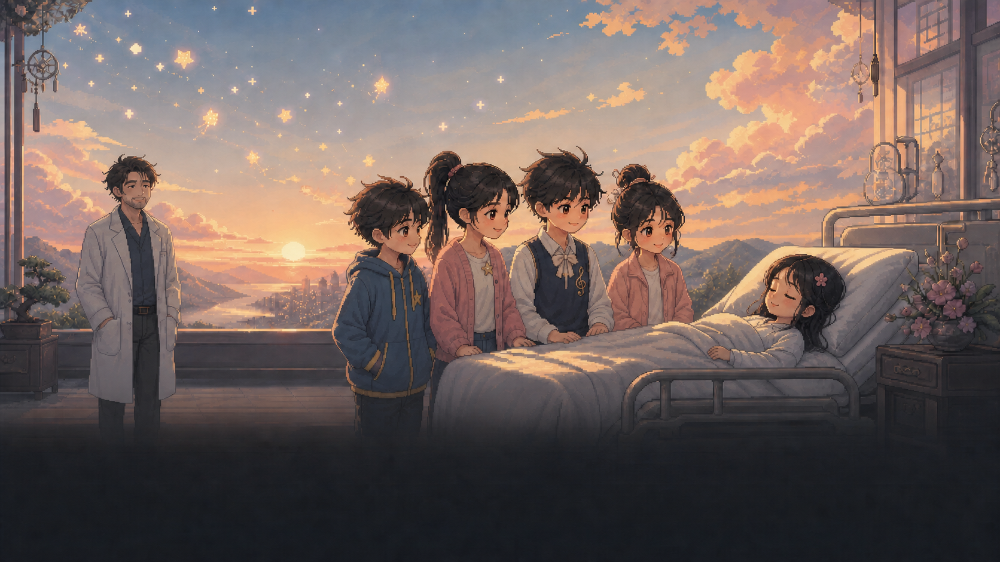

꿈을 잇는 아이
꿈의 연결 중
첫 번째 꿈을 불러오는 중꿈의 연결
꿈을 잇는 아이
빼앗긴 친구들의 꿈을 되돌리기 위한 첫 번째 접속. 하린의 웃음이 사라지기 전에, 꿈의 문을 열어주세요.

전 조수
01 / 02처음에는 이동 A/D · 점프 W · 확인 Enter/F · K 기록만 기억하세요. 나머지 기술과 회전목마 P/Y 원형벽은 해당 꿈에서 화면 아래에 표시됩니다. ESC로 언제든 꿈의 경로를 열 수 있어요.
프롤로그
되돌려야 할
꿈들이 있습니다
수면 과학자는 딸의 완벽한 꿈을 유지하려고 친구들의 행복한 기억을 꿈 추출기의 연료로 빼앗고 있습니다.
윤호는 전 조수의 접속 장치로 하린·유나·하늘의 꿈을 지나며 잃어버린 기억을 되돌리고, 마지막에는 잠든 딸의 꿈에 닿아야 합니다.
일시 정지
게임 설정
ESC를 누르면 현재 꿈으로 돌아갑니다.
악몽 신호가 연결을 밀어냈어.

꿈의 기록
수정 완료
“아빠, 친구들의 행복을 돌려줘.”
상상력의 규칙
상상력 기술
기술을 쓸수록 연결이 약해집니다. 멈추면 상상력은 다시 차오릅니다.
기억의 되감기
과거의 나와 협력하기
K로 길을 기록해 과거의 나에게 맡기고, 되감긴 현재의 나는 다음 자리를 준비하세요.
첫 번째 친구의 이야기
하린의 잃어버린 웃음
친구들을 악몽에 가둔 꿈 추출기는 수면 과학자의 딸이 잠든 ‘완벽한 꿈’을 유지하고 있습니다. 전 조수의 장치로 접속한 윤호는, 하린의 행복했던 기억이 기계의 연료가 되기 전에 웃음 코어를 되찾아야 합니다.
꿈의 여정
친구들의 꿈을 지나, 딸의 꿈까지
- 01접속과 상상력꿈의 법칙을 익히는 시작
- 02하린의 기억 문K로 과거의 나를 남기는 법
- 03달빛 유원지의 벽공포를 넘어 길을 바꾸는 순간
- 04무너지는 회전목마기억의 나 둘과 시간 정지
- 05웃음을 훔치는 광대공포 보스를 진정시키는 첫 결전
- 06별빛 합창의 친구공명으로 숨은 길과 봉인을 드러냄
- 07바람을 가르는 달리기Space 질주로 끊긴 길을 이어감
- 08수면 과학자공명 핵과 탄막을 넘는 최종전
A tiny browser game made for OpenAI Game Builders Seoul · Chapter 01 of a dream action adventure.